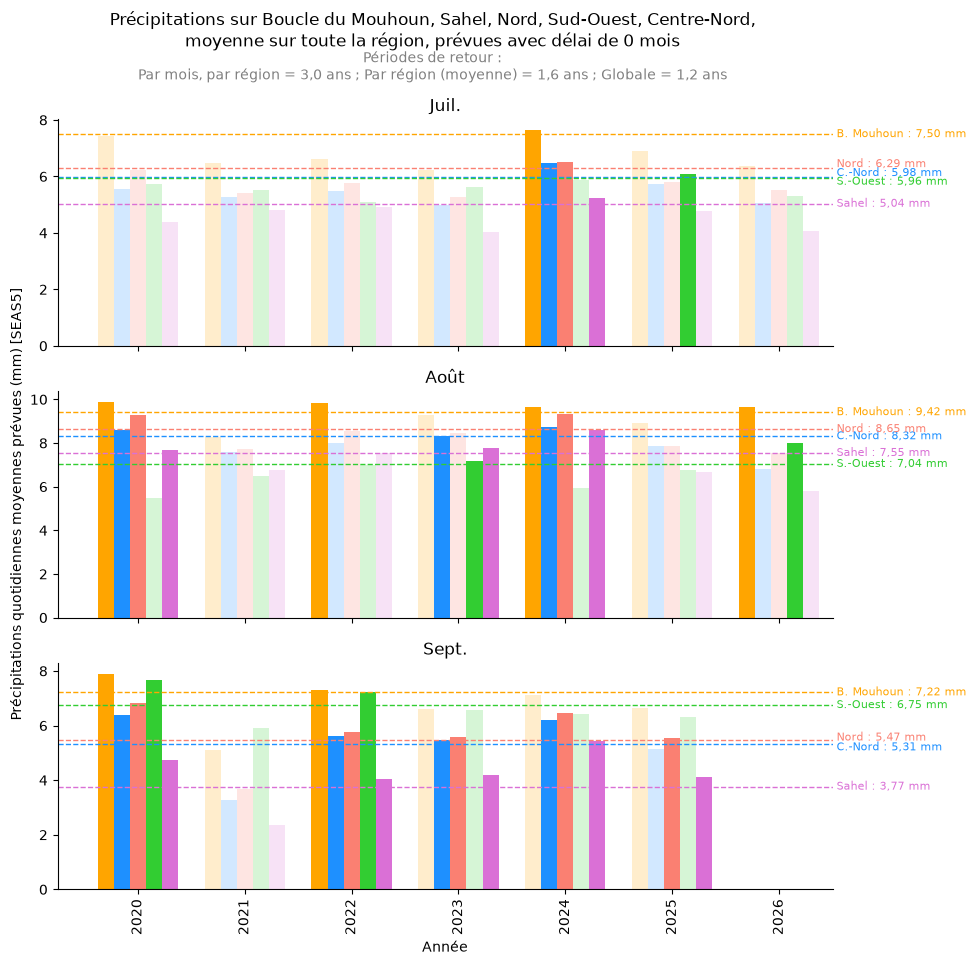

Burkina Faso — Action anticipatoire inondations Suivi des prévisions SEAS5
Dernière mise à jour : prévision émise le 5 août 2026
Août 2026 : seuil atteint dans deux régions.
Les précipitations prévues pour août (délai de 0 mois) dépassent le seuil
de déclenchement (période de retour de 3 ans) dans :
Boucle du Mouhoun : 9,67 mm/jour prévus (seuil 9,42 mm/jour)
La performance de la prévision diffère nettement entre ces deux régions —
voir performance des prévisions ci-dessous
avant toute interprétation.
Les trois autres régions suivies restent en dessous de leur seuil :
Nord (7,52 mm/jour ; seuil 8,65), Centre-Nord (6,81 ; seuil 8,32) et
Sahel (5,80 ; seuil 7,55). En juillet 2026, aucune des cinq régions
n’avait atteint son seuil.

Précipitations quotidiennes moyennes prévues par SEAS5 avec un délai de
0 mois, moyennées sur chaque région. Les barres opaques indiquent les
années où le seuil (ligne pointillée, période de retour de 3 ans,
calculée sur 1981–2024) est atteint. Les prévisions de septembre 2026
seront ajoutées dès leur publication.
Référence : performance des prévisions
Un seuil atteint n’a de valeur que si la prévision qui le déclenche a une
performance démontrée pour le mois et la région concernés. La figure
ci-dessous compare les prévisions SEAS5 à délai de 0 mois aux observations
ERA5 sur 1981–2025, pour chaque région et chaque mois suivi.
Deux mesures sont présentées. La corrélation résume
l’accord sur l’ensemble de la distribution. La
discrimination du tiers le plus humide répond à la
question directement pertinente ici : lorsque la prévision est élevée,
le mois observé est-il effectivement parmi les plus humides ? Une
corrélation correcte peut coexister avec une discrimination proche du
hasard dans la queue haute — c’est précisément le cas qui doit nuancer
une alerte.
Méthodologie reprise de
ds-seas5-skill
(normalisation en espace logarithmique de SEAS5 sur la moyenne et
l’écart-type d’ERA5, puis corrélation), appliquée ici par mois
individuel et par région admin-1 plutôt que par trimestre et par pays.
Les cases hachurées ne se distinguent pas statistiquement d’une absence
de performance.
Lecture pour août 2026.
Les deux dépassements ne se valent pas. Pour la
Boucle du Mouhoun, août est le mois le mieux prévu de la
série (corrélation 0,63 ; discrimination 0,77) : le dépassement est faible
(+3 %) mais la prévision est fiable. Pour le Sud-Ouest,
le dépassement est net (+14 %) mais la discrimination du tiers le plus
humide en août est de 0,54, statistiquement indistinguable du hasard : la
prévision n’a pas démontré de capacité à identifier les mois d’août les
plus humides dans cette région. Ce dépassement doit donc être interprété
avec prudence.